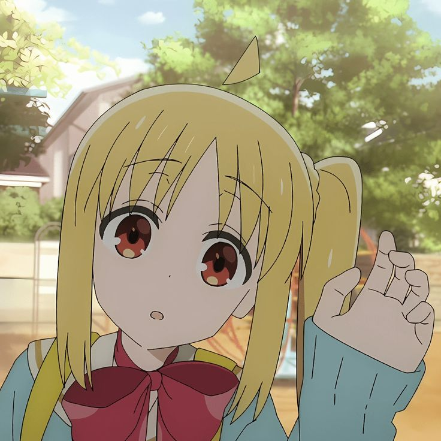
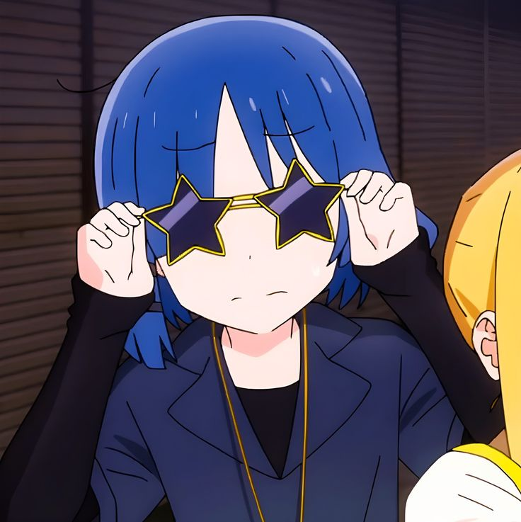
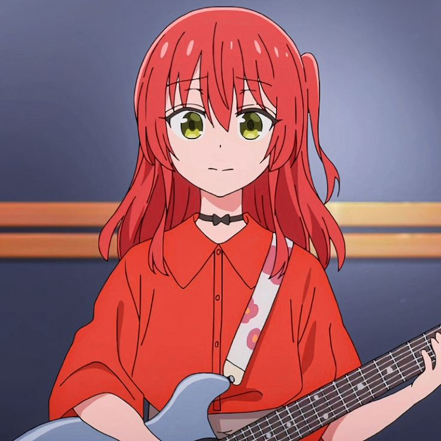
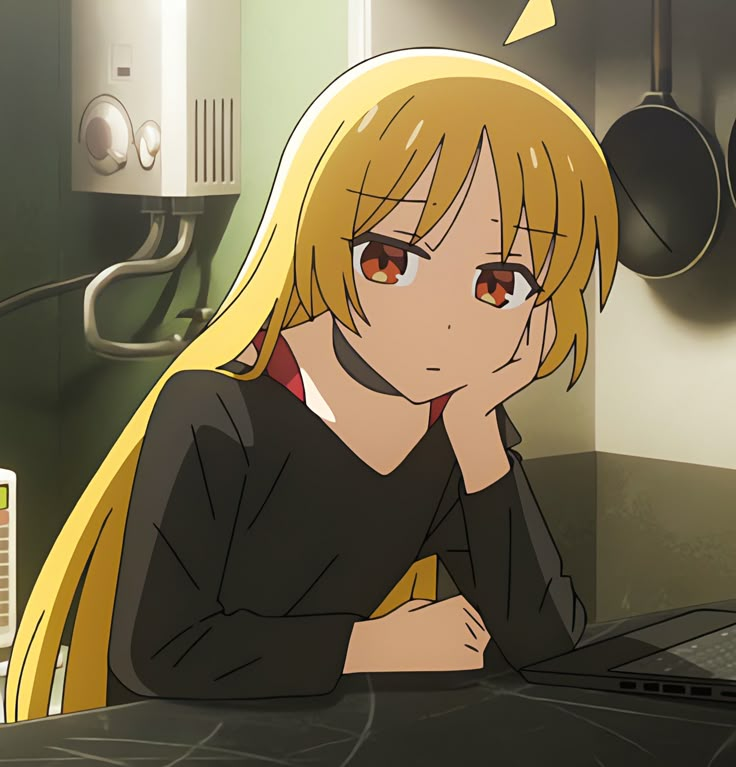
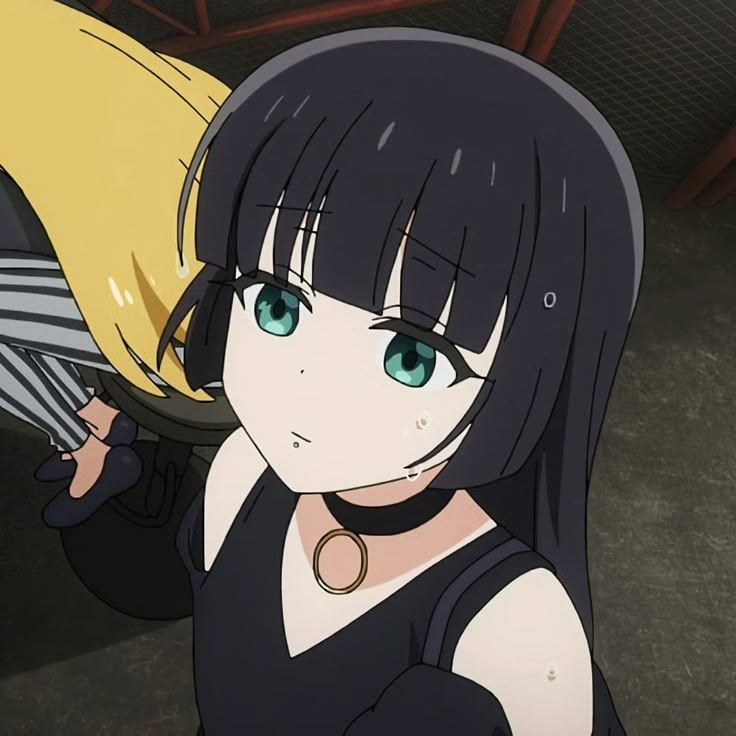
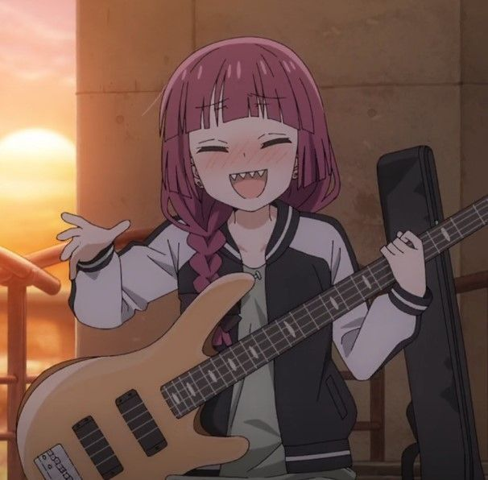

Bocchi
Hitori Gotoh (ひとりGotō Hitori )後ご藤とう , muitas vezes referida por seus colegas de banda como Bocchi-chan (ぼっちちゃん) , [ 2 ] é a protagonista principal da série de mangá e anime Bocchi the Rock! . Ela está no primeiro ano da Shuka High School e é a guitarrista principal e letrista da Kessoku Band .
Ela é extremamente tímida e introvertida, com um forte desejo de se apresentar em uma banda para destacar seus talentos. Essa aspiração a levou a aprender a tocar guitarra. Apesar de ser muito habilidosa, ela enfrenta dificuldades para demonstrar suas habilidades de forma eficaz diante de uma plateia.


Nijika
Uma estudante do segundo ano do ensino médio, enérgica e alegre. Ela é a baterista da Banda Kessoku. A organizadora de sua banda, que cuida de Hitori, já se juntou à Banda Kessoku. Ela tem uma irmã mais velha, Seika , que é a gerente da casa de shows " STARRY " e tem um carinho especial pela casa de shows.
Nijika é geralmente uma garota gentil, doce e amigável. Ela é extrovertida, mas também muito prestativa e faz com que os outros se sintam à vontade. Ela foi exposta à cultura de bandas desde cedo devido à influência de sua irmã mais velha, Seika, que já fez parte de uma banda e agora é gerente de uma casa de shows, estando familiarizada com a indústria musical.
Ryo
Ryo Yamada (リョウYamada Ryō )山やま田だ é uma estudante do segundo ano do ensino médio, fria e solitária. Ela é a baixista da Banda Kessoku e a melhor amiga de Nijika. Seus hobbies são fora do comum, e ela se alegra quando a chamam de esquisita. Ela mora com uma família rica, mas nunca tem dinheiro porque gasta tudo em instrumentos. Ocasionalmente, ela come ervas daninhas para matar a fome.
Ela trabalha meio período na casa de shows STARRY com Nijika Ijichi . Possui uma aparência andrógina e uma aura misteriosa, frequentemente inexpressiva. Costuma fascinar mulheres, incluindo Ikuyo Kita , por quem se apaixona à primeira vista.


Kita
Uma aluna brilhante e popular do primeiro ano do ensino médio. Ela é responsável pela guitarra e pelos vocais da Banda Kessoku. Ela é uma pessoa alegre que gosta de interagir com as pessoas e consegue conversar com qualquer uma delas com um sorriso, sem hesitar, mesmo quando a conhece pela primeira vez. Ela admira muito o Ryo, e seus sentimentos podem ir longe demais. Ela costuma tirar fotos e publicá-las no Isosta .
Kita é uma "personagem alegre" (陽キャラyou-kyara ) e uma daquelas "pessoas festeiras" (パリピparipi ) , sociável e com muitos amigos, como se ela mesma dissesse "Eu adoro interagir com as pessoas", e usa ativamente as redes sociais . Ela tem boa coordenação motora e consegue estudar com segurança, mas também se considera uma pessoa mediana, sem nenhuma qualidade especial em comparação com Ryo. Ela odeia seu primeiro nome e prefere ser chamada pelo sobrenome.
Seika
Seika Ijichi ( Ijichi Seika )伊い地じ知ち 星せい歌か é a gerente da casa de shows STARRY e irmã mais velha de Nijika Ijichi.
Seika costumava fazer parte de uma banda – ela mesma era guitarrista, [ 10 ] e sua habilidade era tamanha que a gravadora chegou a falar em olheiros. Às vezes, ela bate na boca de Nijika e dos membros da Banda Kessoku , [ 11 ] mas, na verdade, pensa mais na Banda Kessoku do que em qualquer outra pessoa. Embora não soubesse que Bocchi era um "guitarhero", ela rapidamente percebeu seu talento como guitarrista. Ela pode ser bastante tsundere às vezes, especialmente quando se trata de sua irmãzinha Nijika. Por exemplo, Nijika afirmou que Seika abriu o show do Starry para ela, embora Seika nunca admita isso. Além disso, era sabido que ela sempre guardava um lugar, querendo que a Banda Kessoku tocasse, mesmo fingindo que não queria. Ela também dorme com seus bichinhos de pelúcia, apesar da idade.


PA-San
PA-san ( PAさん) é uma engenheira de som de sonorização sem nome da STARRY . Ela abandonou o ensino médio porque nunca conseguia acordar cedo e reprovou em muitas matérias. Esse também é o motivo de seu atual emprego noturno. Ela trabalha como YouTuber virtual sob o nome de Alto Otogi (アルトOtogi Aruto )音おと戯ぎ , publicando vídeos de jogos.
Apesar de sua aparência um tanto assustadora, que inicialmente amedronta Bocchi , PA-san é muito gentil, tranquila e amigável. Isso também se reflete na forma como ela conduz suas transmissões como Alto Otogi.
Kikuri
Kikuri é a baixista e vocalista da banda SICK HACK. Ela está bêbada na maioria das cenas da série. Por esse motivo, ela é frequentemente multada por causar problemas, como quebrar o equipamento durante os shows, e por causa disso, ela bebe mais bebida alcoólica, então, embora ganhe dinheiro com seus shows, ela está sempre sem dinheiro. [ 3 ]
Ao contrário de hoje, onde se comporta livremente, Hiroi tinha uma personalidade reclusa e melancólica até o ensino médio. O motivo pelo qual começou a beber foi para suprimir a tensão das apresentações em shows. Ela vê muitas qualidades em comum com sua antiga personalidade em Bocchi e ocasionalmente dá conselhos como uma veterana da banda. Mesmo assim, quando fica muito tempo sem beber álcool, sua personalidade melancólica retorna gradualmente, dependendo do seu nível de consumo.
